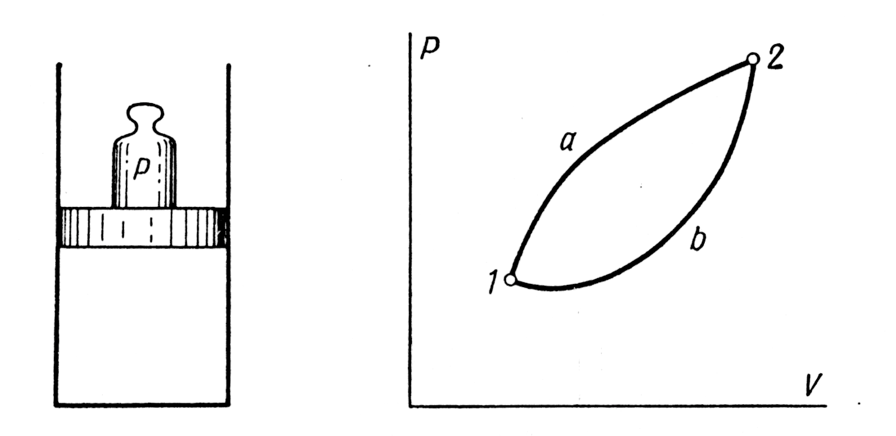

§27. Quelques remarques générales sur les premier et deuxième principes de la thermodynamique
1. La mise en œuvre du premier principe ne permet pas de déterminer le sens d’évolution des processus naturels. Si nous l’appliquons à un système isolé, il n’impose qu’une seule condition, à savoir que l’énergie du système reste constante quelles que soient les transformations. Si on désigne par 1 et 2, deux états quelconques de ce système, le premier principe ne permet pas de décider si le système doit passer de l’état 1 à l’état 2, ou au contraire, de l’état 2 à l’état 1. D’une façon plus générale, l’application du premier principe ne donne aucune indication sur la possibilité des transformations d’un système isolé.
Considérons un système adiabatiquement isolé de deux corps en interaction mutuelle mais sans interaction avec d’autres corps. Nous avons montré, au paragraphe \ref{sec:16}, que l’échange de chaleur entre ces corps doit vérifier l’égalité $Q_{1}=-Q_{2}$. La chaleur $Q_{1}$ reçue par le premier corps est égale à la chaleur $-Q_{2}$ cédée par l’autre corps. Mais le premier principe ne fournit aucune indication relative au sens de transmission de la chaleur. Le premier principe admettrait fort bien que la chaleur s’écoule spontanément du corps le moins chaud vers le corps le plus chaud. Ce principe ignore complètement la mesure quantitative de la température et son application ne peut servir à une échelle de température rationnelle.
Le deuxième principe, au contraire, permet de préciser le sens d’évolution des transformations réelles. D’autre part, il permet de résoudre de façon satisfaisante le problème de la mesure quantitative des températures et d’établir une échelle rationnelle ne dépendant pas du choix, toujours arbitraire, du corps thermométrique et de l’agencement du thermomètre.
Conjointement, les deux principes permettent de déduire un grand nombre de relations quantitatives exactes entre les paramètres macroscopiques des corps se trouvant en équilibre thermodynamique. Toutes ces relations s’appellent relations de la thermodynamique.
2. Le second principe de la thermodynamique est dû à l’ingénieur et physicien français Sadi Carnot qui, dans une brochure intitulée « Réflexions sur la puissance motrice du feu et les machines propres à développer cette puissance », publiée en 1824 (donc bien avant que R. Mayer, Joule et Helmholtz découvrirent le premier principe) exposa les conditions requises pour transformer la chaleur en travail. Or, comme à cette époque de sa vie Carnot était un adepte de la théorie du phlogistique (qu’il renia plus tard), il ne put formuler nettement ce que nous appelons aujourd’hui le second principe de la thermodynamique. Ce fut fait en 1850 – 1851 par le physicien allemand Rudolf Clausius et par le physicien écossais William Thomson (lord Kelvin). Ces physiciens établirent le postulat exprimant le second principe de la thermodynamique et en tirèrent nombre de conséquences.
§28. Formulations du postulat fondamental exprimant le second principe de la thermodynamique
1. Pour formuler le postulat fondamental du second principe en se plaçant dans le cadre historique de l’évolution de la science, nous devons considérer le schéma de fonctionnement d’une machine thermique.
Dans le cylindre de la machine se trouve un gaz ou une substance différente que l’on appelle fluide moteur (figure 23). Pour fixer les idées, admettons que ce soit un gaz dont l’état initial est représenté sur le diagramme $VP$ par le point 1. Mettons le fond du cylindre en contact avec la chaudière qui est un corps ayant une température plus élevée (source chaude) que celle du gaz contenu dans le cylindre. Le gaz s’échauffe et se détend ; ces transformations sont représentées sur le diagramme par la courbe $1a2$. Le fluide moteur reçoit de la chaudière une quantité de chaleur $Q_{1}$ et fournit un travail positif $A_{1}$. Selon le premier principe, $$ Q_{1}=U_{2}-U_{1}+A_{1}\tag{28.1} $$
Il s’agit maintenant de ramener le piston dans sa position initiale, ce qui aura pour effet de comprimer le gaz. Cette opération doit être exécutée de telle manière que le travail $A_{2}$ dépensé pour comprimer le gaz soit plus petit que le travail $A_{1}$. Pour y arriver nous mettons le fond du cylindre en contact thermique avec un condenseur (ou source froide) qui est un corps dont la température est plus basse que celle du gaz contenu dans le cylindre et nous comprimons le gaz sur le chemin $2b1$. On ramène ainsi le gaz à l’état initial 1. Le gaz cède à la source froide une quantité de chaleur $Q_{2}$. Selon le premier principe, $$ -Q_{2}=U_{1}-U_{2}-A_{2}\tag{28.2} $$
En faisant la somme de 28.1 et 28.2, on obtient $$ Q_{1}-Q_{2}=A_{1}-A_{2} \tag{28.3} $$
Ainsi, la machine thermique a effectué un cycle de transformations à la suite duquel la source chaude a fourni au gaz la chaleur $Q_{1}$ et la source froide a reçu la chaleur $Q_{2}$, la différence $Q=Q_{1}-Q_{2}$ ayant été transformée en travail $A_{1}-A_{2}$. Le rapport $$ \eta=\dfrac{A}{Q_{1}}=\dfrac{Q_{1}-Q_{2}}{Q_{1}} \tag{28.4} $$ porte le nom de rendement de la machine thermique.
2. Peut-on construire une machine thermique à fonctionnement cyclique sans condenseur, donc une machine telle que $Q_{2}=0$ et $\eta=1$ ? Une telle machine pourrait alors transformer en travail toute la chaleur fournie par la source chaude. La possibilité de réaliser une telle machine thermique ne contredit pas à la loi de conservation de l’énergie et son importance pratique serait comparable à celle du perpetuum mobile puisqu’elle permettrait de transformer en travail les réserves d’énergie interne pratiquement inépuisables contenues dans les eaux océaniques, dans l’atmosphère et dans les profondeurs de la Terre. Wilhelm Ostwald (1853 – 1932) appela cette machine perpetuum mobile de seconde espèce pour la distinguer du perpetuum mobile de première espèce qui est un moteur produisant du travail à partir de rien, ce qui est en contradiction avec la loi de la conservation de l’énergie.
Carnot avait bien compris qu’il était, par principe, impossible de réaliser une telle machine thermique. Il comparait le fonctionnement des machines thermiques à celui des machines hydrauliques qui produisent du travail grâce à la chute de l’eau d’un niveau supérieur à un niveau inférieur. Selon Carnot, la production de travail dans les machines thermiques est liée à un transfert de chaleur d’un corps chaud à un corps froid. En s’appuyant sur cette analogie, il énonça plusieurs propositions que nous examinerons plus loin. La seule erreur que commit Carnot a été d’admettre, avec ses contemporains, que la chaleur ne pouvait être ni créée, ni détruite.
Les données expérimentales démontrent qu’il est impossible d’élaborer un perpetuum mobile de seconde espèce. C’est pour cela que l’impossibilité de construire un perpetuum mobile de seconde espèce a été érigée en postulat que l’on désigne sous le nom de postulat du second principe de la thermodynamique, qui est donc une généralisation des données expérimentales. Ce postulat se trouve démontré par la concordance de toutes les conséquences qu’on peut en tirer avec l’expérience. Jusqu’à présent l’application de ce postulat à des systèmes macroscopiques dont les dimensions ne sont pas trop petites n’a jamais été contradictoire. On peut donc affirmer que ce postulat repose sur de solides bases expérimentales. Nous donnons ci-après trois formulations de ce postulat.
3. En 1851, William Thomson (qui se vit conférer par la suite le titre de lord Kelvin) donna l’énoncé suivant du postulat du second principe : « On ne peut pas réaliser un cycle de transformations dont l’unique résultat serait de produire du travail par refroidissement d’une source de chaleur ».
On désigne par source de chaleur tout corps ou tout système de corps se trouvant dans un état d’équilibre thermodynamique et possédant une réserve d’énergie interne qu’il peut transmettre à un autre corps ou un ensemble d’autres corps, mais sans fournir de travail macroscopique. Si le système étudié fournit du travail aux dépens de l’énergie interne qu’il emprunte à la source de chaleur, il porte le nom de fluide moteur. Ainsi, selon Thomson, « On ne peut pas réaliser un cycle de transformations dont l’unique résultat serait de produire du travail aux dépens de l’énergie interne d’une source de chaleur ».
4. En concrétisant la nature du travail produit, on arrive à une multitude d’énoncés différents du postulat fondamental. Indiquons la formulation de Planck (1858 – 1947) : « On ne peut élaborer une machine à fonctionnement périodique qui aurait pour unique résultat la remontée d’un poids par une source de chaleur ».
Il est essentiel de préciser, dans la formulation de Planck, que la machine est à fonctionnement périodique, et dans celle de Thomson, que les transformations constituent un cycle fermé. Il est, en effet, possible de réaliser une transformation (non cyclique) dont l’unique résultat serait la remontée d’un poids aux dépens de l’énergie interne empruntée à une source de chaleur. Planck en donne l’exemple suivant : Soit un gaz parfait enfermé dans un cylindre (voir figure \ref{fig:2.2}). On dispose sur le piston un poids $P$ et on met le fond du piston en contact avec une source de chaleur dont la température est supérieure à celle du gaz d’une quantité infiniment petite. Faisons décroître le poids $P$ par portions infiniment petites. Le gaz se détend alors isothermiquement et remonte le poids en produisant le travail $A$. Selon le premier principe, $$ Q=U_{2}-U_{1}+A $$
Comme l’énergie interne $U$ d’un gaz parfait ne dépend que de la température, qui dans notre exemple est constante, $U_{2}-U_{1}=0$, et par suite, $$ Q=A $$ Ainsi, la chaleur prise à la source de chaleur a été entièrement transformée en travail. Il n’y a là aucune contradiction avec le postulat du second principe puisque la transformation envisagée n’est pas cyclique et la machine ne fonctionne pas périodiquement. Le postulat du second principe aurait été mis en défaut si on avait réussi, par un moyen quelconque, à comprimer le gaz de manière à le ramener dans son état initial et, tout en maintenant le poids à la hauteur qu’il avait atteinte, à ramener le piston à sa position initiale sans qu’aucun corps extérieur n’ait subi de changement excepté la source de chaleur dont une partie de l’énergie interne a été utilisée pour produire du travail. Le second principe de la thermodynamique affirme que ce cycle de transformations est irréalisable.
L’énoncé de Planck ne diffère de celui de Thomson que par la forme. Pour raison de commodité, nous appellerons transformation de Thomson-Planck une transformation cyclique imaginaire dont l’unique résultat serait de produire du travail par refroidissement de la source de chaleur. On pourra dire alors que le postulat consiste à affirmer que la transformation de Thomson-Planck est irréalisable.
5. En 1850, Clausius (1822 – 1888) donna une autre formulation du postulat fondamental : « La chaleur ne peut spontanément passer d’un corps moins chaud à un corps plus chaud ». On doit entendre ici par chaleur l’énergie interne du corps. L’énoncé de Clausius ne se réduit pas du tout à affirmer que, du fait d’un contact direct des corps, la chaleur passe toujours du corps le plus chaud à un corps moins chaud. Cette proposition est non pas l’énoncé d’une loi physique, mais une simple définition de ce qu’il faut entendre par corps plus chaud et corps moins chaud (cf. \ref{sec:4}). L’échange de chaleur (ou plus précisément l’échange d’énergie interne) peut être effectué non seulement par contact thermique mais par une infinité d’autres procédés. Par exemple, tous les corps émettent et absorbent des radiations visibles et invisibles (ondes électromagnétiques). Le rayonnement émis par un corps donné peut être focalisé sur un autre corps à l’aide d’une lentille ou d’un miroir sphérique et assurer ainsi une transmission de chaleur. Or, on ne peut réaliser n’importe quelle transmission de chaleur et le postulat de Clausius affirme justement qu’il n’existe aucun procédé permettant de prendre de la chaleur à un corps plus froid et de la transmettre à un corps plus chaud sans qu’aucun changement ne se produise par ailleurs. Tous les processus imaginaires qui permettraient de le faire sont appelés transformations de Clausius. Le postulat affirme donc que la transformation de Clausius est irréalisable.
Le postulat de Clausius n’implique pas que la transmission de chaleur d’un corps froid à un corps chaud soit absolument impossible. Il affirme qu’elle est impossible si aucun changement ne se produit dans tous les autres corps. C’est ce qu’il faut entendre par le mot spontanément figurant dans l’énoncé de Clausius. Mais, si on admet que d’autres corps sont le siège de transformations, la transmission de chaleur d’un corps froid à un corps chaud devient possible. Ces transformations sont dites de compensation. Ainsi, dans les réfrigérateurs, la chaleur prise à un corps froid est transmise à un corps chaud. Il n’y a là aucune contradiction avec le postulat de Clausius puisque cette transmission de chaleur n’est pas spontanée, étant réalisée à l’aide d’un moteur électrique. Le réfrigérateur électrique cesse de fonctionner dès qu’on coupe le courant d’alimentation. La machine thermique la plus simple, dont il a été question au début de ce paragraphe (voir figure 23), peut fonctionner comme réfrigérateur. Pour cela, la détente du fluide moteur doit s’effectuer suivant le chemin $1b2$ et sa compression selon le chemin $2a1$. Lors de la détente suivant $1b2$, la machine prend à la source froide la chaleur $Q_{2}$ et lors de la compression suivant $2a1$, elle cède à la source chaude la chaleur $Q_{1}>Q_{2}$. La machine reçoit simultanément le travail positif $A’=Q_{1}-Q_{2}$ qui constitue ici la transformation de compensation.
6. Du fait que la transformation de Thomson-Planck soit irréalisable, il découle que la transformation de Clausius l’est également.
Pour démontrer cette assertion, nous allons supposer que la transformation de Clausius est possible. Faisons parcourir un cycle à la machine thermique la plus simple, lors duquel elle prend à la source chaude la chaleur $Q_{1}$, transmet à la source froide la chaleur $Q_{2}$ et produit un travail positif $A=Q_{1}-Q_{2}$. Après cela, à l’aide d’une transformation de Clausius, prenons à la source froide la chaleur $Q_{2}$ pour la restituer à la source chaude. Ainsi, sera réalisé un cycle dont l’unique résultat serait la production d’un travail $A$ aux dépens d’une quantité de chaleur équivalente $Q_{1}-Q_{2}$ prise à la source chaude. Aucun autre changement ne s’est produit nulle part ailleurs. Or, tout cela constitue une transformation de Thomson-Planck qui, par hypothèse, est irréalisable. La contradiction qui apparaît ainsi démontre notre proposition.
7. Inversement, l’impossibilité de réaliser la transformation de Clausius implique que la transformation de Thomson-Planck est irréalisable. Pour le démontrer, nous allons supposer que la transformation de Thomson-Planck est réalisable. En faisant parcourir à la machine un cycle de Thomson-Planck, nous pourrons alors prendre à la source froide une quantité de chaleur $Q$ et l’utiliser pour fournir un travail mécanique tel que la remontée d’un poids. Nous utiliserons ensuite l’énergie du poids remonté pour réchauffer, par frottement par exemple, la source chaude. On réalisera ainsi le transfert à la source chaude de la chaleur $Q$ prise à la source froide sans aucun autre changement dans la Nature. Or, c’est la transformation de Clausius qui, par hypothèse, est irréalisable. Le fait qu’on aboutit ainsi à une contradiction démontre notre proposition.
Dans cette démonstration, nous avons utilisé, en plus du postulat de Clausius, l’hypothèse que l’énergie potentielle du poids qui a été relevé peut être intégralement transformée en chaleur. Cette assertion découle de l’expérience quotidienne selon laquelle un corps pesant qui rencontre, en tombant, un obstacle, finit toujours pas s’arrêter. L’énergie potentielle du corps pesant disparaît mais de la chaleur apparaît. Selon le premier principe, cette quantité de chaleur est exactement équivalente à l’énergie potentielle perdu du corps pesant.
Les postulats de Clausius et de Thomson-Planck sont donc équivalents.
Transformations réversibles et irréversibles
1. Lorsqu’à la suite d’une certaine transformation le système passe d’un état $A$ dans un état $B$ différent, et s’il existe ne serait-ce qu’un procédé unique pour le faire revenir à l’état initial $A$ sans faire subir à tous les autres corps le moindre changement, on dit que cette transformation est réversible. Dans le cas où on ne peut le faire d’aucune façon, on dit que la transformation envisagée est irréversible. Un exemple de transformation irréversible est le transfert de chaleur d’un corps plus chaud à un corps moins chaud par le procédé de contact thermique. L’irréversibilité de cette transformation résulte directement du postulat de Clausius. La production de chaleur par frottement est un autre exemple de transformation irréversible. L’irréversibilité est alors un corollaire du postulat de Thomson-Planck.
Une transformation est dite réversible dans le sens large du terme (ou parfaitement réversible) si on peut faire revenir le système de l’état final $B$ à l’état initial $A$ par n’importe quel procédé et sans exiger que le système passe par la même succession d’états intermédiaires que le sens direct $A\longrightarrow B$. Dans le cas où, dans la transformation inverse $B\longrightarrow A$, le système doit passer par la même succession d’états intermédiaires que dans la transformation $A\longrightarrow B$, la transformation $A\longrightarrow B$ est dite réversible dans le sens restreint du terme (ou simplement réversible). Il est évident que tout processus réversible dans le sens restreint du terme est aussi réversible dans le sens large.
\mypar
*Toutes les transformations quasi statiques sont simplement réversibles}. En effet, toute transformation quasi statique est une transformation infiniment lente constituée par une succession d’états d’équilibres, ou plus exactement d’états infiniment proches des états d’équilibres. Si on considère un état d’équilibre, par définition même de l’équilibre, en l’absence d’actions extérieures il subsiste indéfiniment. Pour faire démarrer une transformation, on doit rompre l’équilibre par des actions extérieures, c’est à dire modifier les paramètres extérieurs et la température du milieu ambiant. Pour que la transformation soit quasi statique, il faut que ces changements soient tellements lents qu’à tout instant le système se trouve dans un état d’équilibre ou dans un état infiniment proche d’un état d’équilibre. À la limite, on obtient une transformation idéalisée évoluant à une vitesse infiniment petite et constituée par une succession d’états d’équilibres. À l’aide de telles transformations on peut faire passer le système d’un état initial $A$ à un état final $B$ aussi éloigné que l’on veut de l’état initial, à condition d’y mettre le temps nécessaire. Si on inverse le signe des accroissements infiniments petits des paramètres extérieurs et de la température, on fera revenir le système à l’état initial $A$ en parcourant, dans l’ordre inverse, une succession d’états intermédiaires infiniments peu différents des états parcourus lors de la transformation directe. À la limite, lorsque les transformations directe et inverse correspondent rigoureusement à l’équilibre, cette petite différence disparaît complètement. À la suite des transformations directe et inverse, les corps environnants n’auront subi aucun changement puisque les paramètres extérieurs et la température du milieu ambiant reprennent exactement les mêmes valeurs qu’ils avaient initialement. On peut donc dire qu’une transformation quasi statique est réversible aussi bien dans le sens large que dans son sens restreint. Cette proposition est largement utilisée en thermodynamique où on admet que *tout cycle quasi statique peut évoluer dans le sens direct et dans le sens inverse}.
\mypar
\begin{wrapfigure}{R}{.4\linewidth} \centering \includegraphics[width=\linewidth]{./chap_3/chap_3_images/fig_24} \caption{\label{fig:24}} \end{wrapfigure}
Pour illustrer ces considérations, étudions à titre d’exemple un système adiabatique isolé tel qu’un gaz contenu dans un cylindre fermé par un piston mobile. Pour créer la pression extérieure $P$ on place sur le piston un poids donné. Pour modifier commodément le poids, on suppose qu’il est constitué par du sable fin. Provoquons une détente adiabatique du gaz qui le fait passer de l’état d’équilibre initial $M$ dans l’état d’équilibre final $N$ (figure \ref{fig:24}). Cette transformation est réalisée en enlevant du sable grain par grain. Lorsqu’on enlève le premier grain de sable, la pression extérieure diminue et le gaz se détend. La détente est alors tellement petite qu’on a peine à la déceler, mais en fait c’est une transformation hors d’équilibre s’accompagnant de mouvements macroscopiques compliqués du gaz. En fin de compte, le gaz retrouve un état d’équilibre représenté sur le diagramme par le point $1$. En enlevant un deuxième grain de sable, on provoque une nouvelle transformation du gaz, elle aussi hors d’équilibre, qui aboutit finalement à l’état d’équilibre $2$. En répétant cette opération $n$ fois de suite, on fait passer le gaz dans l’état d’équilibre $N$, après avoir parcouru un nombre fini $(n - 1)$ d’états d’équilibre intermédiaires $1$, $2$, \ldots, $(n- 1)$. Comme chacun de ces états découle du précédent au prix d’une petite transformation hors d’équilibre, la transformation $M \longrightarrow N$ est une transformation hors d’équilibre.
Essayons maintenant de ramener le gaz dans son état initial $M$ en augmentant grain par grain la charge du piston. Nous parcourons alors la même suite finie d’états d’équilibre $(n-1)$, $(n-2)$, \ldots, $M$ que lors de la transformation directe. Mais les petites transformations hors d’équilibre intermédiaires ne sont plus les mêmes. Par exemple, lors de la transformation inverse $N \longrightarrow (n-1)$ le gaz sera comprimé sous une pression un peu plus grande (puisque le nombre de grains de sable se trouvant sur le piston a été augmenté de un) que lors de la transformation directe $(n-1) \longrightarrow N$. Par suite, on doit fournir au gaz un travail plus grand que celui qu’il avait fourni lors de la transformation directe. La transformation $M \longrightarrow N$ qui est constituée par un nombre fini d’états d’équilibre est donc elle-même irréversible.
Supposons maintenant que le poids des grains de sable diminue indéfiniment et que leur nombre augment lui aussi indéfiniment, le poids total du tas de sable étant maintenu constant. À la limite, la transformation hors d’équilibre $M \longrightarrow N$ devient quasi statique et se laisse représenter par la courbe continue $MN$. La transformation inverse est représentée par la même courbe, mais parcourue dans le sens inverse. Le travail fourni par le gaz lors de la transformation directe est égal au travail fourni pendant la transformation inverse ; ce travail est représenté par l’aire d’un trapèze curviligne limité dans sa partie supérieure par la courbe $MN$. Pour ramener le gaz dans son état initial, on doit dépenser le même travail que celui qui est fourni par le gaz lors de sa détente. Il est évident que la détente quasi statique du gaz est une transformation réversible dans le sens limité du terme.
\begin{prob} Une mole de gaz parfait de chaleur massique $C_{V}$ est contenue dans un cylindre à parois adiabatiques muni d’un piston mobile pouvant s’y déplacer sans frottement. Le piston est soumis à une pression extérieure $P_{1}$ constante. À un certain instant on fait croître ou décroître brusquement la pression extérieure jusqu’à la valeur $P_{2}$. (On y parvient en enlevant une partie de la charge portée par le piston ou en rajoutant une certaine charge.) Du fait de cette variation brusque de la charge, le volume du gaz varie adiabatiquement. Calculer la température et le volume du gaz lorsque celui-ci retrouve son état d’équilibre thermodynamique.
\begin{description}
\item[Solution.]
Lorsqu'un gaz est détendu ou comprimé adiabatiquement, il ne re\c coit ni ne cède aucune quantité de chaleur, mais fournit un travail $A = P_{2} \Delta V$ ; par suite $\Delta U + P_{2}\Delta V = 0$. Comme $U = C_{V} T$, on en tire
\[
C_{V} (T_{2}-T_{1}) + P_{2}(V_{2}-V_{1}) = 0
\]
ou
\[
C_{V} (T_{2}-T_{1}) + RT_{2} = P_{2}V_{1}
\]
Par conséquent,
$$
T_{2} = \dfrac{C_{V}T_{1}+P_{2}V_{1}}%
{C_{P}}
\label{eq:29.1}
$$
$$
V_{2} = \dfrac{RT_{2}}{P_{2}}
\label{eq:29.2}
$$
\end{description}
\end{prob}
\begin{prob} Reprenons le modèle précédent et supposons qu’une fois l’équilibre établi, on fait revenir d’un seul coup la pression à sa valeur $P_{1}$. Calculer la température finale $T_{3}$ et le volume final $V_{3}$ du gaz lorsqu’il retrouve à nouveau son état d’équilibre thermodynamique.
\begin{description} \item[Solution.] En utilisant les résultats du problème précédent, on obtient \begin{eqnarray} T_{3} & = & \dfrac{C_{V}T_{2}+P_{1}V_{2}}% {C_{P}} \label{eq:29.3}\ V_{3} & = & \dfrac{RT_{3}}{P_{1}} \end{eqnarray}
À l'aide de l'équation de Clapeyron $PV = RT$ et de la relation de R. Mayer $C_{P}-C_{V}=R$, on peut mettre l'expression de $T_{3}$ sous la forme suivante :
$$
T_{3} = T_{1} + \dfrac{C_{V}}{C_{P}^{2}}
\dfrac{V_{1} (P_{2}-P_{1})^{2}}{P_{2}}
\label{eq:29.4}
$$
\end{description}
\end{prob} Cette formule montre qu’après deux transformations adiabatiques consécutives la température et le volume du gaz augmentent toujours. Si la variation de pression est infiniment petite, selon (\ref{eq:29.4}) les variations de la température et du volume sont *des infiniments petits du second ordre}. Au premier ordre de grandeur près, les paramètres restent constants. On en conclut que si on effectue une détente adiabatique du gaz en diminuant par portions infinitésimales la charge du piston, puis en l’augmentant de la même fa\c con, la température et le volume du gaz dans l’état final ne se distingueront de leurs valeurs initiales que d’une quantité infiniment petite. À la limite, lorsque les portions dont on diminue ou dont on augmente la charge du piston tendent vers zéro et que leur nombre tend vers l’infini, le gaz exécute une transformation finie en repassant à la compression par les mêmes états d’équilibre successifs que ceux qu’il avait parcourus pendant sa détente.
Le cycle de Carnot et le théorème de Carnot
\label{sec:30}}
L’échelle thermodynamique de température}\label{sec:31}
Identité de l’échelle thermodynamique de température et de
l’échelle du thermomètre à gaz parfait}\label{sec:32}
Réduction de l’échelle du thermomètre à gaz à l’échelle
thermodynamique}\label{sec:33}
Exemples d’application du théorème de Carnot}\label{sec:34}
La différence des chaleurs massiques $C_P$ et $C_V$}\label{sec:35}
Procédé de principe de graduation d’un thermomètre dans l’échelle
absolue}\label{sec:36}
L’inégalité de Clausius (cas particulier)}\label{sec:37}
Forme générale de l’inégalité de Clausius}\label{sec:38}
Principe du chauffage dynamique}\label{sec:39}
L’égalité de Clausius et l’entropie}\label{sec:40}
Loi de l’accroissement de l’entropie}\label{sec:41}
Généralisation de la notion d’entropie aux états hors
équilibre}\label{sec:42}
Accroissement de l’entropie résultant de la diffusion des gaz.
Paradoxe de Gibbs}\label{sec:43}
Sur les différentes interprétations du second principe de la
thermodynamique}\label{sec:44}
Fonctions thermodynamiques}\label{sec:45}
Théorie thermodynamique de l’effet Joule-Thomson}\label{sec:46}
Remarques générales sur la méthode des fonctions thermodynamiques.
Exemples d’application}\label{sec:47}
Travail maximal et énergie libre}\label{sec:48}
Force électromotrice d’un élément galvanique}\label{sec:49}
Critères généraux de la stabilité thermodynamique}\label{sec:50}
Le principe de Le Chatelier-Braun et la stabilité de l’équilibre
thermodynamique}\label{sec:51}